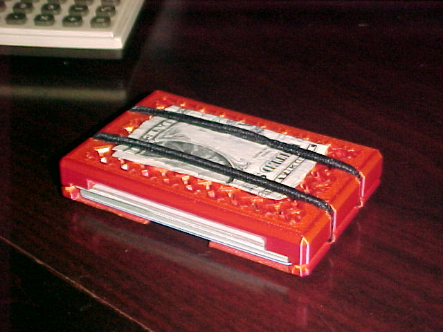

3D Printed Wallet With Chainmail Coinpurse

So this is actually a remake of a project I did, gosh, 4 years ago now? In 2021 I couldn't find a wallet I liked that held coins so I made my own. This is a slim wallet design that holds cards and coins. It is made from two parts and is held together with 2 ordinary elastic hair ties. The orignal was written in OpenSCAD using someone else's chainmail code and it was really poorly written and terrible to make changes (my code, not theirs). It desperately needed chamfers to prevent jean rippage. Chamfers as we all know are the final boss arch enemy of the OpenSCAD script.
I had been using these things as my daily for years. So when the last one finally gave up the ghost (like version 5 I believe?) I decided to bite the bullet and use my newfound mad FreeCAD skillz to remake it from scratch.
This new version has beveled edges to prevent pant damage as well as reinforcement around the notches for the hair ties that hold it together since that has been a weak point in the past. It's also all around thicker and wide enough to hold buisness cards without munging the edges.
If you'd like your own you can download both the stl files and the freeCAD file on Printables and throw the data at your favorite bed slinger. (Warning, this site may not load on Netscape Navigator 3.0)